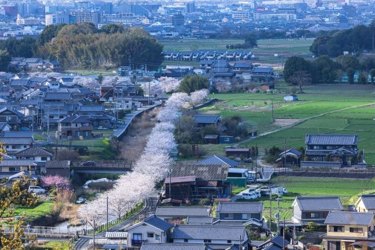
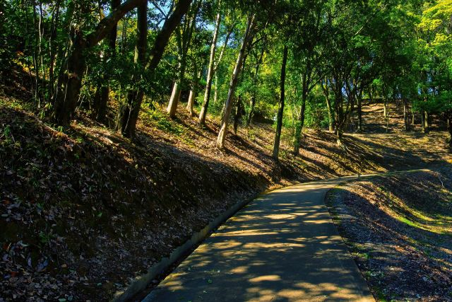

飛鳥を一望する展望
展望台からは飛鳥の里や藤原京跡、大和三山を見渡すことができます。

甘樫丘は、飛鳥の里を一望できる展望スポットです。 丘の上からは飛鳥寺や飛鳥宮跡、藤原京跡、大和三山などを眺めることができ、飛鳥ならではの歴史景観を楽しめます。 また、蘇我蝦夷・入鹿親子の邸宅があった場所とも伝えられ、自然と歴史を同時に感じられる場所です。
| 見学時間 | 自由見学 |
|---|---|
| 定休日 | なし |
| 料金 | 無料 |
| 所要時間 | 30分〜1時間 |
| 駐車場 |
甘樫丘第1駐車場
（徒歩5分・普通車500円）
甘樫丘第2駐車場 （徒歩5分・普通車500円） 甘樫丘地区川原駐車場 （徒歩10分・無料） |
| アクセス |
近鉄飛鳥駅から徒歩35分。 奈良交通明日香周遊バス「甘樫丘」から徒歩5分。 |
| 地図 | 地図はこちら |

展望台からは飛鳥の里や藤原京跡、大和三山を見渡すことができます。

季節ごとの草花や木々を楽しみながら、ゆっくり散策できます。
甘樫丘は、飛鳥時代の政治の中心地に近い場所に位置する丘です。 日本書紀には、蘇我蝦夷・入鹿親子の邸宅が甘樫丘にあったとされる記述があります。 周辺には飛鳥寺や飛鳥宮跡など重要な史跡が残り、古代飛鳥の歴史を感じられる場所として整備されています。